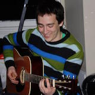

Aaron Sands | Bio
 I was born and raised in the small river town of Red Wing, Minnesota. After graduating in high school in 2010, I moved away from home and attended Winona State University in Winona, Minnesota. I knew I wanted to do something with mathematics or science. At first, I considered the composite materials engineering program at WSU, but eventually settled on computer science as my major. Being very analytical and a natural problem solver, it seemed to suit me well! After my first semester of CS classes, I was hooked. It was interesting, challenging, and rewarding. If only my high school had some computer science courses, I thought! It didn't take long before I realized I would be happy developing software for a living. In addition to Java, I’ve worked with MySQL, HTML, CSS, Javascript, Objective-C, and even assembly language in my coursework. During junior and senior year, I also worked an on-campus job doing some software testing and development for the company Digi International. There, I was exposed to Groovy, Python, and jQuery.
I was born and raised in the small river town of Red Wing, Minnesota. After graduating in high school in 2010, I moved away from home and attended Winona State University in Winona, Minnesota. I knew I wanted to do something with mathematics or science. At first, I considered the composite materials engineering program at WSU, but eventually settled on computer science as my major. Being very analytical and a natural problem solver, it seemed to suit me well! After my first semester of CS classes, I was hooked. It was interesting, challenging, and rewarding. If only my high school had some computer science courses, I thought! It didn't take long before I realized I would be happy developing software for a living. In addition to Java, I’ve worked with MySQL, HTML, CSS, Javascript, Objective-C, and even assembly language in my coursework. During junior and senior year, I also worked an on-campus job doing some software testing and development for the company Digi International. There, I was exposed to Groovy, Python, and jQuery.
After graduating with my bachelor's in Spring of 2014, I landed a job at a healthcare company in the twin cities, doing full-stack web development primarily using Grails. It wasn't long before I was making many contributions to our small team. I stayed there for a little over a year before taking a short break. Recently, I have switched over to the education domain. I recently scored a role as a Java developer at Pearson VUE.
Aside from programming, I am also a huge music enthusiast. Most of what I listen to is older rock like Bob Dylan, The Band, and Neil Young, as well as newer alternative/independent stuff like Arcade Fire, Vampire Weekend, Modest Mouse, and just about everything in between. My ears are open to just about every genre, however, and most recently, I’ve been really into jazz from the 50’s and 60’s. There’s hardly ever a moment when I’m not listening to music at home! One of my other primary passions is staying fit. I have been a long-distance runner since middle school. In the warmer months, I like to bike, and in the colder months, snowboard. Other than that, I love cooking, reading, watching movies, and drinking good beer ;)